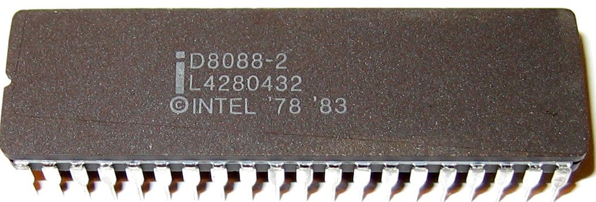

Programmeertaal & Programmeren
Een programma bepaald hoe we met invoer een bepaalde uitvoer kunnen verkrijgen.
Excel werkt met bepaalde invoer (bijvoorbeeld cijfergegevens) en kan deze verwerken naar een bepaalde uitvoer (bijvoorbeeld een grafiek). Excel is dus het programma dat de verwerking uitvoert. Gebruikers kunnen verschillende programma’s gebruiken of installeren. Dit om met andere invoer te werken of de verwerking anders uit te voeren. Als programmeur kan je echter het programma maken dat de uitvoer doet.
Opdrachten voor de computer
Een computer is een logische machine die we opdrachten kunnen geven.
Voorbeelden van opdrachten:
-
Schrijf iets weg naar een bestand op de ssd.
-
Krijg een lijst van de bestanden op de hdd.
-
Toon iets op het scherm.
-
Haal een pagina op van het internet via het ethernet netwerk.
-
Tel 2 getallen op en sla het op in een variabele x.
Opdrachten worden gegeven via een programma. De computer bestaat uit verschillende onderdelen. Het is de CPU, processor of centrale rekeneenheid die het programma interpreteert.

Opdrachten geven aan een computer kan via een programma. Met een programmeertaal kan een programma geschreven worden.
CPU Instructieset
Iedere computer CPU heeft een bepaalde architectuur of ontwerp. Hier zijn heel wat standaarden in:
-
x86 (32bit), ontwikkeld door Intel
 -
x64 (64bit), de modernere variant ontwikkeld door AMD

-
ARM, een zuinigere architectuur, deze zit bijna iedere smartphone.
-
RISC

-
Mainframe


Aan deze architectuurstandaarden van CPU’s kunnen opdrachten gegeven worden via de instructieset, dit is de machinetaal van de processor. Dit zijn afgesproken opdrachten op een laag niveau (vb. onthoud een getal, tel een getal op, haal een waarde op van de ssd, …)
Deze opdrachten via de instructieset kunnen in een laag niveau computertaal worden voorgesteld, namelijk assembly:

Dit is een zeer ingewikkelde manier om te programmeren.
Gelukkig zijn er hoog niveau programmeertalen ontwikkeld die het ons gemakkelijker maken.
Hoog niveau programmeertalen
Hoog niveau programmeertalen (die makkelijker zijn om te schrijven), kunnen via compilatie automatisch omgezet worden naar machinetaal.
Tekst (Hogere programmeertaal) → compilatie → machinetaal voor een specifieke architectuur
De machinetaal wordt bijgehouden in een uitvoerbaar bestand of executable (iets waarop je kan dubbelklikken om het programma te openen).
Voorbeelden Hello World in enkele programmeertalen
-
C
#include <stdio.h> int main() { printf("Hello World"); return 0; } -
Cpp
#include <iostream> using namespace std; int main() { cout << "Hello World"; return 0; } -
Ruby
puts "Hello World!" -
Java
class MyClass{ public static void main(String args[]){ System.out.println("Hello Java"); } } -
Python 3
print("Hello, World!") -
C#
using System; namespace HelloWorldApp { class MyClass { static void Main(string[] args) { Console.WriteLine("Hello World!"); Console.ReadKey(); } } } -
Fortran
program hello print *, 'Hello, World!' end program hello
Programmeertalen: Een historisch overzicht

Er zijn voortdurend nieuwe ontwikkelingen in programmeertalen. Nieuwe talen worden ontwikkeld. Ze kunnen populair worden, bijna niet gebruikt worden of andere talen beïnvloeden met hun nieuwe ideeën. Iedere bestaande taal, zoals Python, wordt ook verder doorontwikkeld. Het verschil tussen python versie 1 en versie 3.11 is enorm groot. Hoewel het om dezelfde programmeertaal gaat, zal een programma ontwikkeld voor pyhton 3, niet meer werken op python 1.
De Geschiedenis van Programmeertalen
De geschiedenis van programmeertalen is een evolutie gedreven door innovatie om aan steeds veranderende softwarebehoeften te voldoen. Laten we enkele belangrijke mijlpalen in de geschiedenis van programmeertalen nader bekijken:
-
1940s-1950s: De allereerste programmeertalen, zoals Assembly en Fortran, waren voornamelijk gericht op machinetaal en technische details.
-
1950s-1960s: Talen zoals COBOL en ALGOL introduceerden hogere abstractie en leesbaarheid, wat programmeren toegankelijker maakte.
-
1960s-1970s: De opkomst van talen zoals C en Pascal bracht gestructureerd programmeren en modulariteit naar voren.
-
1980s-1990s: Objectgeoriënteerde talen zoals C++ en Java versterkten concepten zoals herbruikbaarheid en complexe softwareontwikkeling.
-
2000s-heden: Moderne talen zoals Python leggen de nadruk op leesbaarheid, productiviteit en veelzijdigheid, waardoor ze geschikt zijn voor diverse toepassingen.
Cursus Programmeren met Python
In deze cursus programmeren werken we met de programmeertaal Python. Hier zijn verschillende redenen voor:
-
Python is open source, wat betekent dat je het gratis kunt gebruiken zonder licentiekosten.
-
Python is een krachtige programmeertaal.
-
Het is een objectgeoriënteerde taal en werkt met klassen naast functies.
-
Python is een multiplatform programmeertaal. Zodra de code is geschreven, werkt deze op Windows, Linux, MacOSX, en meer.
-
Python heeft een functionele programmeerstijl, naast het objectgeoriënteerde aspect (waardoor het een meervoudige paradigma-taal is).
-
Python is populair in het bedrijfsleven en in diverse sectoren.
-
Python maakt gebruik van veel concepten die ook in andere programmeertalen voorkomen. Als je eenmaal Python beheerst, kun je gemakkelijk overstappen naar andere talen.
De Ontwikkeling van Python
Python is een programmeertaal die in de late jaren 80 en vroege jaren 90 is ontwikkeld door Guido van Rossum, een Nederlands programmeur. De ontwikkeling van Python werd gemotiveerd door verschillende overwegingen en die de kenmerken van de taal hebben beïnvloed:
-
Leesbaarheid en Eenvoud: Guido van Rossum streefde ernaar om een programmeertaal te maken met een duidelijke en elegante syntaxis, zodat ontwikkelaars gemakkelijk code konden schrijven en begrijpen.
-
Productiviteit: Hij wilde een taal creëren die ontwikkelaars in staat zou stellen sneller en efficiënter code te schrijven, zonder zich te veel bezig te houden met technische details.
-
Modulariteit en Herbruikbaarheid: Python moedigt modulaire programmering aan, wat betekent dat ontwikkelaars code in kleine, herbruikbare modules kunnen organiseren. Dit maakt het eenvoudiger om complexe problemen aan te pakken.
-
Diversiteit aan Toepassingen: Guido van Rossum wilde een taal ontwerpen die geschikt was voor verschillende toepassingsgebieden, waaronder webontwikkeling, data-analyse, wetenschappelijke berekeningen en meer.
-
Gemeenschap en Samenwerking: Guido heeft Python als open-sourceproject beschikbaar gesteld, wat heeft bijgedragen aan het ontstaan van een actieve en betrokken gemeenschap van ontwikkelaars.
In de loop der jaren heeft Python zijn plaats veroverd als een van de meest populaire programmeertalen ter wereld, deels dankzij de nadruk op leesbaarheid, eenvoud en gemeenschapsgerichtheid.
Python heeft verschillende problemen aangepakt die werden ervaren in talen zoals C++ en Java:
-
Eenvoudigere Syntax: Python biedt een eenvoudige en leesbare syntax in vergelijking met Java, wat resulteert in minder boilerplate-code en gemakkelijker te begrijpen code.
-
REPL: De Python REPL (Read-Eval-Print Loop) is een interactieve omgeving waarin je direct Python-code kunt invoeren, die vervolgens wordt geëvalueerd en het resultaat onmiddellijk wordt weergegeven. Het biedt een directe manier om codefragmenten te testen, concepten te verkennen en te experimenteren zonder een volledig script te schrijven.
-
Platformonafhankelijkheid: Python’s code is vaak direct uitvoerbaar op verschillende platforms, terwijl C++ aanpassingen nodig heeft voor optimale prestaties op verschillende systemen.
-
Leesbaarheid en Productiviteit: Python benadrukt leesbaarheid en efficiëntie, wat kan leiden tot snellere ontwikkeling en onderhoud van code in vergelijking met Java en C++.
-
Uitgebreid Ecosysteem: Python heeft een breed scala aan bibliotheken en frameworks voor verschillende toepassingsgebieden, waardoor het gemakkelijker is om taken uit te voeren zonder alles zelf te hoeven schrijven. Java is hier ook zeer sterk in.
Hoewel Python over het algemeen minder snel is dan Java vanwege zijn dynamische aard, heeft het voortdurende optimalisaties en externe modules die de prestaties kunnen verbeteren, wat de snelheidskloof in veel gevallen verkleint.
Nadelen van Python ten opzichte van Andere Talen
Hoewel Python vele voordelen heeft, heeft het ook enkele nadelen ten opzichte van andere talen:
-
Snelheid: Python kan trager zijn dan gecompileerde talen zoals C++ vanwege zijn interpretatie en dynamische aard.
-
Global Interpreter Lock (GIL): In CPython (standaardimplementatie) kan de GIL het gelijktijdig uitvoeren van meerdere threads belemmeren, wat de prestaties in multi-threaded applicaties kan beperken.
-
Mobiele Ontwikkeling: Voor mobiele app-ontwikkeling is Python minder gangbaar dan talen zoals Java (voor Android) en Swift (voor iOS).
-
Applicatiegrootte: Python-apps kunnen groter zijn vanwege de noodzaak om de Python-runtime op te nemen.
-
Toegang tot Laag Niveau: Voor laag-niveau programmering, zoals systeemniveau taken, is Python minder geschikt dan talen zoals C.
Ondanks deze nadelen wordt Python nog steeds breed gebruikt vanwege zijn veelzijdigheid en leesbaarheid.
De snelheid of traagheid van Python
Python kan trager zijn dan C++ om verschillende redenen:
-
Interpretatie vs. Compilatie: Python wordt geïnterpreteerd, wat betekent dat de code tijdens de uitvoering wordt vertaald naar machine-instructies. Dit kan resulteren in langzamere uitvoering in vergelijking met C++, waar code vooraf wordt gecompileerd tot direct uitvoerbare machinecode.
-
Dynamische Typing: Python staat bekend om zijn dynamische typering, waarbij variabelen geen expliciete typen hebben en hun typen pas tijdens runtime worden bepaald. Hoewel dit flexibiliteit biedt, kan het interpreteren van variabele typen extra tijd kosten in vergelijking met statisch getypeerde talen zoals C++.
-
Gegevensstructuren: Python biedt algemenere gegevensstructuren, terwijl C meer mogelijkheden biedt om gegevensstructuren te optimaliseren voor specifieke gebruiksscenario's. Dit kan resulteren in efficiëntere gegevensverwerking in C.
-
Global Interpreter Lock (GIL): CPython, de standaardimplementatie van Python, heeft een GIL die ervoor zorgt dat slechts één thread tegelijk Python-code kan uitvoeren. Dit kan de prestaties beïnvloeden bij multi-threaded toepassingen, aangezien meerdere threads niet parallel Python-code kunnen uitvoeren.
-
Runtime Overhead: Python heeft overhead vanwege zijn dynamische aard, objectgeoriënteerde karakter en garbage collection. Deze overhead kan leiden tot langzamere prestaties in vergelijking met C++, vooral bij rekenintensieve taken.
Hoewel Python over het algemeen trager is dan C++, biedt het andere voordelen, zoals verbeterde leesbaarheid en verhoogde productiviteit, wat de keuze voor Python in veel gevallen rechtvaardigt.
Python schrijven (of programmeren)
Python wordt geschreven in een tekst document. Dit tekst document heeft de .py extensie. Bijvoorbeeld: MijnPythonBestand.py . Dit tekstbestand bevat gewone tekst (woorden bestaande uit karakters). De tekst die je schrijft moet wel voldoen aan de syntax van de taal.
De syntax
Iedere programmeertaal bestaat uit een syntax. Dit zijn een reeks afspraken van de taal:
-
Welke woorden kunnen gebruikt worden? In Python mag een woord bijvoorbeeld niet beginnen met een cijfer.
-
welke woorden zijn gereserveerd door de programmeertaal? Bijvoorbeeld het return woord.
-
Op welke plaats mogen deze woorden staan?
-
Welke scheidingskarakters worden toegestaan of verplicht? Python verplicht bijvoorbeeld : na een for lus.
-
Hoe belangrijk is indentatie?
Om succesvol te programmeren dien je de syntax van een taal te kennen.
De syntax bepaalt hoe statements, variabelen, functies en klassen geschreven moeten worden.
Inleiding tot Python
Waarom Python kiezen in plaats van Java?
Bij het kiezen van een programmeertaal, zoals Python of Java, rijst vaak de vraag welke het meest geschikt is. Hoewel beide talen krachtige tools zijn voor softwareontwikkeling, zijn er enkele overwegingen die Python tot een aantrekkelijke keuze maken, vooral voor beginners en middelbare scholieren.
Leesbaarheid en Eenvoud
Python onderscheidt zich door zijn eenvoudige en leesbare syntaxis. Dit betekent dat code in Python bijna als natuurlijke taal lijkt en gemakkelijk te begrijpen is, zelfs voor mensen zonder programmeerachtergrond. Laten we dit vergelijken met een eenvoudig voorbeeld in zowel Python als Java:
# Python
print("Hello, world!")
# Java
public class HelloWorld {
public static void main(String[] args) {
System.out.println("Hello, world!");
}
}Zoals je kunt zien, is de Python-code veel beknopter en leesbaarder. Dit maakt het eenvoudiger om de essentie van de code te begrijpen zonder afgeleid te worden door overmatige syntactische details.
Snel Prototypen en Snelle Ontwikkeling
Python staat bekend om zijn snelle ontwikkelingsmogelijkheden. Het vereist minder code om dezelfde functionaliteit te bereiken in vergelijking met talen zoals Java. Dit is vooral handig bij het maken van prototypes en het iteratief ontwikkelen van projecten. Laten we een vergelijking maken tussen een eenvoudige lijstverwerkingstaak in beide talen:
# Python
numbers = [1, 2, 3, 4, 5]
squared = [num ** 2 for num in numbers]
# Java
import java.util.ArrayList;
public class SquaredNumbers {
public static void main(String[] args) {
ArrayList<Integer> numbers = new ArrayList<>();
numbers.add(1);
numbers.add(2);
numbers.add(3);
numbers.add(4);
numbers.add(5);
ArrayList<Integer> squared = new ArrayList<>();
for (Integer num : numbers) {
squared.add(num * num);
}
}
}In dit voorbeeld toont Python zijn beknopte syntaxis en vermogen om complexe operaties te vereenvoudigen. Dit kan leiden tot een productievere ontwikkeling en snellere resultaten, vooral voor beginners.
Laten we nog een eenvoudig voorbeeld bekijken om het verschil tussen Python en Java te illustreren bij het uitvoeren van een eenvoudige berekening, bijvoorbeeld het berekenen van de som van getallen van 1 tot 10.
# Python
total = sum(range(1, 11))
print("De som is:", total)// Java
public class SumExample {
public static void main(String[] args) {
int total = 0;
for (int i = 1; i <= 10; i++) {
total += i;
}
System.out.println("De som is: " + total);
}
}Zoals je kunt zien, vereenvoudigt Python de berekening en resulteert in minder code.
Brede Toepassingsmogelijkheden
Hoewel Java een krachtige taal is voor het bouwen van complexe systemen, biedt Python een breed scala aan toepassingen en domeinen. Python wordt gebruikt voor webontwikkeling, gegevensanalyse, machine learning, wetenschappelijke berekeningen en nog veel meer. Het is zelfs een populaire taal voor scripting en automatisering. Deze veelzijdigheid stelt ontwikkelaars in staat om hun vaardigheden over verschillende disciplines toe te passen zonder van taal te hoeven wisselen.
-
Webontwikkeling: Met frameworks zoals Django en Flask kun je interactieve en dynamische websites bouwen.
-
Data-analyse: Python wordt vaak gebruikt in combinatie met bibliotheken zoals pandas en NumPy om gegevens te analyseren en inzichten te verkrijgen.
-
Wetenschappelijke berekeningen: Bibliotheken zoals SciPy en Matplotlib stellen wetenschappers in staat om complexe berekeningen uit te voeren en resultaten te visualiseren.
-
Machine learning en kunstmatige intelligentie: Populaire bibliotheken zoals TensorFlow en scikit-learn maken geavanceerde AI-implementaties mogelijk.
-
Automatisering: Python kan worden gebruikt om repetitieve taken te automatiseren en workflows te stroomlijnen.
Conclusie
Hoewel Java en Python beide waardevolle programmeertalen zijn, biedt Python enkele voordelen die het aantrekkelijk maken voor beginners en middelbare scholieren. De leesbaarheid, eenvoudige syntaxis, snelle ontwikkeling en brede toepassingsmogelijkheden maken Python een uitstekende keuze om te leren en te beginnen met programmeren. In deze cursus zullen we ons richten op Python vanwege zijn geschiktheid voor beginners en de kansen die het biedt voor het opbouwen van solide programmeervaardigheden.
Van Code naar Uitvoering op de CPU
Deze python code print een tekst naar de console:
print('Hello world!')Maar toch wordt deze codeopdracht niet rechtstreeks uitgevoerd op de CPU. De CPU werkt immers enkel op machinecode instructies.
Er worden dus enkele tussenliggende stappen uitgevoerd.
De Rol van de Interpreter
Wanneer je Python-code schrijft, schrijf je in een taal die begrijpelijk is voor mensen, maar niet direct voor computers. Om deze code uit te voeren, wordt een cruciale tussenstap ingezet: de Python-interpreter.

De Python-interpreter vertaalt de menselijk leesbare Python-code naar een vorm van tussentaal die bekend staat als bytecode. Bytecode is een reeks instructies die specifiek zijn ontworpen om te worden uitgevoerd door de Python Virtual Machine (PVM). Dit virtuele uitvoeringssysteem fungeert als een brug tussen de abstracte code en de werkelijke uitvoering op de CPU.

Dit is bijvoorbeeld de gegenereerde bytecode van het 'Hello world' programma:
\00\00\00\00\EA\D5\E5d\00\00\00\E3\00\00\00\00\00\00\00\00\00\00\00\00\00\00\00\00\00\00\00@\00\00\00s
\00\00\00e\00d\00\83\00dS\00)z
Hello world!N)\DAprint\A9\00r\00\00\00r\00\00\00\FAR/home/mark/Documents/python/liclipse-workspace/pythontest/pythoncode/helloworld.py\DA<module>\00\00\00s\00\00\00\00\00Voor ons is dit moeilijk leesbaar, maar de Python virtual machine kan dit perfect lezen.
Van Bytecode naar Machinecode
Machinecode is de laagste niveau van instructies die de CPU direct begrijpt. Echter, voordat de machinecode wordt bereikt, wordt de bytecode verwerkt door de PVM, die het omzet in instructies die kunnen worden uitgevoerd door de fysieke CPU van de computer.
De PVM is in feite een interpreter voor bytecode die ervoor zorgt dat de code wordt uitgevoerd op verschillende platforms (Windows, Linux, MacOSX, … , maar ook de processor op dit systeem: x86, ARM, x64, RISC,..) zonder dat het nodig is om dezelfde code te herschrijven voor elk platform. Dit maakt Python een platformonafhankelijke taal.
Linter: Codekwaliteit en Conventies
Voordat de code wordt uitgevoerd, is het van groot belang om ervoor te zorgen dat deze correct is en voldoet aan specifieke coderingsstandaarden. Een linter is een hulpmiddel dat de code analyseert op fouten, inconsistenties en afwijkingen van de conventies.
Laten we dit illustreren met een voorbeeld van een stukje Python-code:
# Onjuiste naamgeving van variabelen
Var = 42
prinT(var)Een linter zou hier waarschuwingen genereren voor onjuiste naamgeving van variabelen en een functie die niet correct is gespeld.
Compilatie en Uitvoering
Python wordt beschouwd als een geïnterpreteerde taal, wat betekent dat de code regel voor regel wordt uitgevoerd door de interpreter. Dit in tegenstelling tot talen zoals C++ of Java, waarbij de code eerst volledig wordt omgezet in machinecode door een compilatieproces voordat deze wordt uitgevoerd.
Echter, Python maakt gebruik van compilatie op verschillende niveaus. Nadat de bytecode is gegenereerd door de interpreter, kan de PVM ervoor kiezen om deze bytecode te compileren naar machinecode op het niveau van de hostcomputer. Deze vorm van compilatie staat bekend als Just-In-Time (JIT) compilatie en draagt bij aan de snelheid van uitvoering van Python-programma’s.
Samenvatting
Het pad van Python-code naar uitvoering op de CPU omvat diverse tussenstappen, van interpretatie en bytecode tot JIT-compilatie en uiteindelijk machinecode.
Gebruik van Variabelen
Ontdekking van Variabelen in Python
Variabelen vormen een kernconcept in programmeren, waardoor ontwikkelaars waarden kunnen opslaan en manipuleren voor gebruik in hun programma’s. In Python zijn variabelen containers voor het opslaan van gegevens zoals getallen, tekst, lijsten, en meer. Laten we dieper ingaan op het gebruik van variabelen in Python.
Datatypen en Variabelen
In Python zijn variabelen niet expliciet getypeerd, wat betekent dat je geen datatype hoeft op te geven wanneer je een variabele declareert. Python bepaalt automatisch het datatype op basis van de waarde die aan de variabele wordt toegewezen.
Bijvoorbeeld, om een integer (geheel getal) op te slaan in een variabele genaamd leeftijd, hoef je alleen maar deze toewijzing uit te voeren:
leeftijd = 16In dit geval heeft Python automatisch het datatype van leeftijd ingesteld op integer.
Variabelen Toewijzen en Waarden Bijwerken
Variabelen in Python worden toegewezen met behulp van de toewijzingsoperator (=). De operator wijst een waarde toe aan een variabele.
Bijvoorbeeld, om de tekst "Hallo, wereld!" op te slaan in een variabele genaamd groet, kun je het volgende doen:
groet = "Hallo, wereld!"Variabelen kunnen op elk moment van waarde veranderen. Je kunt dezelfde variabele bijwerken met een nieuwe waarde:
groet = "Hallo, wereld!"
groet = "Hallo, daar!"In dit voorbeeld heeft groet eerst de waarde "Hallo, wereld!" en wordt deze vervolgens bijgewerkt naar "Hallo, daar!".
Variabelen en Scope
Variabelen hebben een bepaalde "scope" of bereik, wat aangeeft waar de variabele beschikbaar en geldig is. In Python kunnen variabelen lokaal (binnen een specifieke functie) of globaal (door het hele programma) zijn.
Laten we een voorbeeld bekijken om het concept van scope te illustreren:
globale_variabele = 10
def functie():
lokale_variabele = 5
print("Lokale variabele:", lokale_variabele)
print("Globale variabele binnen functie:", globale_variabele)
functie()
print("Globale variabele buiten functie:", globale_variabele)Uitvoer:
Lokale variabele: 5 Globale variabele binnen functie: 10 Globale variabele buiten functie: 10
Hier zien we dat de variabele lokale_variabele alleen beschikbaar is binnen de functie waarin deze is gedefinieerd. De variabele globale_variabele kan zowel binnen als buiten de functie worden gebruikt, omdat deze een globale scope heeft.
Variabelen en Gegevenstypen
Python heeft verschillende ingebouwde gegevenstypen die je kunt gebruiken om variabelen van verschillende soorten gegevens op te slaan. Enkele van de veelgebruikte datatypen zijn:
-
int: Gehele getallen, zoals 5, -10, 100.
-
float: Komma-getallen, zoals 3.14, -0.5, 2.0.
-
str: Tekst, zoals "Hallo, wereld!", 'Python'.
-
bool: Booleaanse waarden, True of False.
Bijvoorbeeld:
a = 5 # int
b = 3.14 # float
naam = "Alice" # str
waar = True # boolGegevenstypes in Python
Gegevenstypes zijn fundamentele bouwstenen in programmeren en stellen ontwikkelaars in staat om verschillende soorten gegevens te representeren en te manipuleren. In Python zijn gegevenstypes ingebouwd en flexibel, wat de taal krachtig en veelzijdig maakt. Laten we dieper ingaan op enkele belangrijke gegevenstypes in Python.
Integer (int)
Het gegevenstype int staat voor gehele getallen, zoals 5, -10 en 100. Integer-waarden worden gebruikt voor wiskundige bewerkingen en numerieke berekeningen. Python staat toe om positieve en negatieve gehele getallen te gebruiken, evenals getallen met en zonder decimale punten.
Bijvoorbeeld:
leeftijd = 16
temperatuur = -5
aantal_studenten = 30Float (Komma-getal)
Het gegevenstype float vertegenwoordigt komma-getallen, ook wel bekend als zwevendekomma-getallen. Dit omvat getallen met decimale punten, zoals 3.14, -0.5 en 2.0. Float-waarden worden gebruikt voor nauwkeurige berekeningen met reële getallen.
Bijvoorbeeld:
pi = 3.14159
geldbedrag = 123.45
hoogte = -10.5String (str)
Het gegevenstype str staat voor tekstuele gegevens, zoals woorden, zinnen of karakters. Tekst in Python wordt omringd door enkele aanhalingstekens (') of dubbele aanhalingstekens (").
Bijvoorbeeld:
naam = "Alice"
bericht = 'Hallo, wereld!'
label = "Productcode: 12345"Strings kunnen worden gecombineerd (geconcateneerd) met behulp van de + operator:
voornaam = "John"
achternaam = "Doe"
volledige_naam = voornaam + " " + achternaam
print(volledige_naam) # Output: John DoeBoolean (bool)
Het gegevenstype bool vertegenwoordigt booleaanse waarden, namelijk True (waar) of False (onwaar). Booleaanse waarden worden veel gebruikt in logische bewerkingen en beslissingsstructuren, zoals if-voorwaarden.
Bijvoorbeeld:
is_student = True
heeft_toegang = False
is_regenachtig = TrueBooleaanse waarden zijn ook het resultaat van vergelijkingsoperatoren, zoals == (gelijk aan), != (niet gelijk aan), < (kleiner dan), > (groter dan), etc.
a = 5
b = 10
resultaat = a < b # True, want 5 is kleiner dan 10Type Conversie
Soms is het nodig om gegevens van het ene type naar het andere te converteren. Python biedt functies om dit te doen. Bijvoorbeeld, om een getal om te zetten naar een string, kun je de functie str() gebruiken:
leeftijd = 16
leeftijd_als_string = str(leeftijd)Dynamische Typing
Python staat ook bekend om zijn dynamische typen, wat betekent dat het datatype van een variabele kan veranderen terwijl het programma wordt uitgevoerd. Dit in tegenstelling tot sterk getypeerde talen waar het datatype strikt moet worden gedefinieerd en behouden.
Bijvoorbeeld:
a = 5
a = "Hallo"
a = TrueConclusie
De verscheidenheid aan gegevenstypes in Python, waaronder integer, float, string en boolean, biedt ontwikkelaars flexibiliteit bij het manipuleren van verschillende soorten gegevens. Het begrijpen van deze gegevenstypes en hun toepassingen is essentieel voor het schrijven van effectieve en veelzijdige Python-programma’s.
Variabelen en Expressies
Variabelen kunnen worden gebruikt in wiskundige en logische expressies om complexere berekeningen uit te voeren. Bijvoorbeeld:
lengte = 10
breedte = 5
oppervlakte = lengte * breedte
print("Oppervlakte:", oppervlakte)In dit voorbeeld wordt de variabele oppervlakte berekend door de waarden van de variabelen lengte en breedte met elkaar te vermenigvuldigen.
Conclusie
Variabelen zijn een essentieel concept in Python-programmering, waardoor ontwikkelaars gegevens kunnen opslaan, manipuleren en gebruiken in hun
Diepere Duik in Python: Functies en Herbruikbaarheid van Code
Het Belang van Functies in Python
Functies zijn een essentieel concept in Python en programmeren in het algemeen. Ze stellen ontwikkelaars in staat om logica te groeperen en te structureren, waardoor code modulair en herbruikbaar wordt. Door functies te gebruiken, kun je complexe problemen opdelen in kleinere, beheersbare stappen, waardoor het gemakkelijker wordt om de functionaliteit van een programma te begrijpen, te onderhouden en uit te breiden.
Functies Definiëren en Oproepen
Het definiëren van een functie begint met het def-sleutelwoord, gevolgd door de naam van de functie en de parameters tussen haakjes. Parameters zijn waarden die aan de functie worden doorgegeven om mee te werken. Je kunt nul, één of meerdere parameters hebben, afhankelijk van de behoeften van je functie.
Bijvoorbeeld, laten we een eenvoudige functie definiëren om twee getallen op te tellen:
def optellen(a, b):
"""
Deze functie telt twee getallen op en geeft het resultaat terug.
:param a: Het eerste getal.
:param b: Het tweede getal.
:return: Het resultaat van de optelling.
"""
resultaat = a + b
return resultaatOm deze functie op te roepen, verstrekken we argumenten die overeenkomen met de parameters:
som = optellen(5, 3)
print(som) # Output: 8Cursus Python voor Middelbare Scholieren
Diepere Duik in Python: Parameters in Functies
Het Belang van Parameters in Functies
Parameters zijn een cruciaal concept bij het definiëren en aanroepen van functies in Python. Ze stellen functies in staat om gegevens te ontvangen en ermee te werken, waardoor functies dynamisch en flexibel kunnen worden. Met parameters kun je waarden doorgeven aan functies zodat deze kunnen worden verwerkt en gemanipuleerd. Laten we dieper ingaan op verschillende aspecten van het gebruik van parameters in functies.
Positionele Parameters
Positionele parameters zijn de meest voorkomende soorten parameters in Python. Ze zijn waarden die aan een functie worden doorgegeven in dezelfde volgorde als waarin de parameters in de functiedefinitie zijn opgegeven. Bij het aanroepen van de functie worden argumenten voor deze parameters in dezelfde volgorde doorgegeven.
Bijvoorbeeld, laten we een functie definiëren die twee getallen optelt met behulp van positionele parameters:
def optellen(a, b):
"""
Deze functie telt twee getallen op.
:param a: Het eerste getal.
:param b: Het tweede getal.
:return: Het resultaat van de optelling.
"""
resultaat = a + b
return resultaat
som = optellen(5, 3)
print(som) # Output: 8Standaardwaarden voor Parameters
Functies kunnen standaardwaarden hebben voor hun parameters. Dit betekent dat als een waarde niet expliciet wordt doorgegeven bij het aanroepen van de functie, de standaardwaarde wordt gebruikt. Standaardwaarden maken functies flexibeler omdat ze kunnen werken met verschillende aantallen argumenten.
Bijvoorbeeld, laten we een functie definiëren die een bericht afdrukt met een standaardgroet als er geen naam wordt opgegeven:
def begroeten(naam="Vriend"):
"""
Deze functie begroet een persoon met een optionele naam.
:param naam: De naam van de persoon (standaard is "Vriend").
"""
print(f"Hallo, {naam}!")
begroeten() # Output: Hallo, Vriend!
begroeten("Alice") # Output: Hallo, Alice!args en kwargs
In sommige gevallen wil je een variabel aantal argumenten aan een functie doorgeven, zonder vooraf te weten hoeveel dat er zullen zijn. De notatie args en kwargs staan dit toe.
-
argsstaat voor "arguments" en verzamelt positionele argumenten in een tuple. -
kwargsstaat voor "keyword arguments" en verzamelt genoemde argumenten in een dictionary.
Bijvoorbeeld, laten we een functie definiëren die een variabel aantal getallen kan optellen:
def optellen_met_args(*args):
"""
Deze functie telt een variabel aantal getallen op.
:param args: Een tuple van getallen om op te tellen.
:return: Het resultaat van de optelling.
"""
resultaat = sum(args)
return resultaat
totaal = optellen_met_args(5, 10, 15)
print(totaal) # Output: 30Je kunt ook genoemde argumenten doorgeven met kwargs:
def afdrukken_met_kwargs(**kwargs):
"""
Deze functie drukt genoemde argumenten af.
:param kwargs: Een dictionary van genoemde argumenten.
"""
for sleutel, waarde in kwargs.items():
print(f"{sleutel}: {waarde}")
afdrukken_met_kwargs(voornaam="Alice", leeftijd=25)
# Output:
# voornaam: Alice
# leeftijd: 25Conclusie
Parameters zijn een krachtig instrument om functies in Python aanpasbaar en herbruikbaar te maken. Ze stellen functies in staat om gegevens te ontvangen en ermee te werken, waardoor je code flexibel wordt en verschillende scenario’s kunt ondersteunen zonder duplicatie van code. Het begrijpen van positionele parameters, standaardwaarden, 'args' en 'kwargs' geeft je meer controle en flexibiliteit bij het definiëren en aanroepen van functies.
Documentatie van Functies
Het is een goede gewoonte om functies te documenteren, zodat anderen (en jijzelf in de toekomst) begrijpen wat de functie doet, welke parameters deze verwacht en welke resultaten deze retourneert. Dit wordt vaak gedaan met behulp van zogenaamde "docstrings", zoals weergegeven in het vorige voorbeeld. Door je code goed te documenteren, wordt het delen en samenwerken aan projecten eenvoudiger.
Herbruikbaarheid van Code
Een van de belangrijkste voordelen van functies is hun bijdrage aan herbruikbaarheid van code. Zodra je een functie hebt gedefinieerd, kun je deze op elk gewenst moment oproepen vanuit verschillende delen van je programma. Hierdoor kun je dezelfde functionaliteit hergebruiken zonder code te dupliceren.
Bijvoorbeeld, stel dat we dezelfde optelling op meerdere plaatsen in ons programma moeten uitvoeren. Met een functie kunnen we dit efficiënt doen:
def optellen(a, b):
resultaat = a + b
return resultaat
som1 = optellen(5, 3)
som2 = optellen(10, 7)
som3 = optellen(2, 2)
print(som1) # Output: 8
print(som2) # Output: 17
print(som3) # Output: 4Return Statements
Het return-statement beëindigt de uitvoering van een functie en retourneert een resultaat aan de oproepende code. Dit resultaat kan van elk gegevenstype zijn, inclusief numeriek, tekstueel of zelfs complexe objecten.
Bijvoorbeeld:
def kwadraat(x):
"""
Deze functie berekent het kwadraat van een getal.
:param x: Het getal waarvan het kwadraat wordt berekend.
:return: Het kwadraat van het gegeven getal.
"""
return x * x
getal = 5
kwadraat_van_getal = kwadraat(getal)
print(kwadraat_van_getal) # Output: 25Functies met Meerdere Parameters
Functies kunnen meerdere parameters accepteren, waardoor je complexere berekeningen en logica kunt uitvoeren. Parameters kunnen worden gebruikt om waarden door te geven aan de functie, zodat deze ermee kan werken.
Bijvoorbeeld, een functie om de oppervlakte van een rechthoek te berekenen:
def oppervlakte_rechthoek(breedte, lengte):
"""
Deze functie berekent de oppervlakte van een rechthoek.
:param breedte: De breedte van de rechthoek.
:param lengte: De lengte van de rechthoek.
:return: De oppervlakte van de rechthoek.
"""
oppervlakte = breedte * lengte
return oppervlakte
breedte = 4
lengte = 7
opp = oppervlakte_rechthoek(breedte, lengte)
print(opp) # Output: 28Scope en Lokale Variabelen
Functies introduceren ook het concept van "scope", wat aangeeft waar variabelen beschikbaar en geldig zijn. Variabelen die binnen een functie worden gedefinieerd, zijn meestal alleen beschikbaar binnen die functie, tenzij ze expliciet als resultaat worden geretourneerd. Dit helpt om variabelen geïsoleerd te houden en interferentie met andere delen van je programma te voorkomen.
Ingebouwde en Aangepaste Functies
Python biedt een breed scala aan ingebouwde functies, zoals print(), len(), str(), int(), float(), enz. Deze functies zijn al beschikbaar in de taal en kunnen worden gebruikt zonder dat je ze zelf hoeft te definiëren. Aangepaste functies zijn de functies die je zelf definieert om specifieke taken uit te voeren.
Functies als Objecten
In Python zijn functies "first-class citizens", wat betekent dat ze kunnen worden behandeld als objecten. Dit stelt je in staat om functies als argumenten aan andere functies door te geven, ze in variabelen op te slaan en